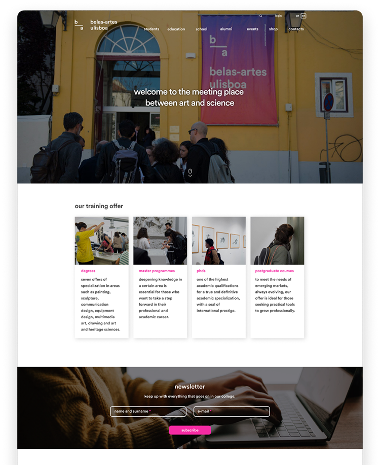
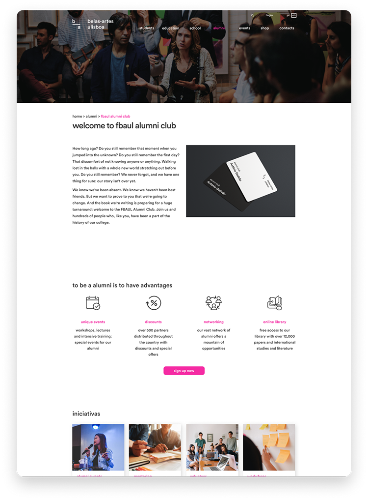

Widespread consistency improvements were made, such as body text, titles, forms, card introduction and a shadow system with standardized elevation grades. The secondary navigation bar (top) has been simplified containing only three functionalities: login to the Fénix platform, search and language change.The home page is now more inclusive and more standard, ending up by being the exhibition of the whole site and with a disruption with all the other pages.
Here you can find different entry points to the main sections of the site as well as have access to the contents more updated.

The image is now a banner with overlay, all along with the page and with the reduced height.
The organization of the content and the positioning of the titles were also refined.
The position of the breadcrumbs was more standardized, placed above the main title
of the page and with the pipes ( | ) instead
of symbols "bigger than" (>).
The new style of the button allows users
to see more clearly that these elements
are indeed interactive.
Creation of a new page as well as a new sub-structure for the alumni menu.
